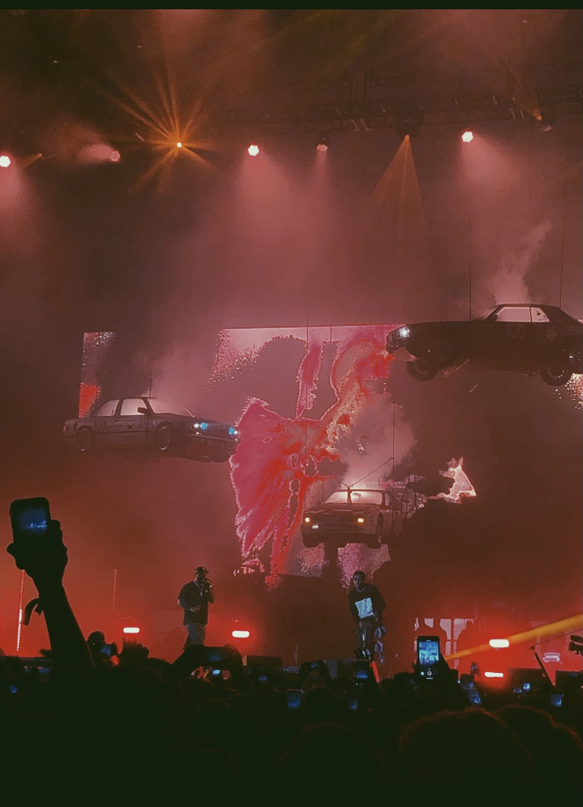

Something I like is some of the pictures and experiences I have taken throught the years as well as some of my own edits I have done in this past semester, I enjoy going to a lot of concerts and places and these are some of those moments I have captured.
-ASAP Rocky Edit I did for my class last semester.
-Image of Long Branch Beach in New Jersey.
-The Travis Scott concert for his astroworld tour in 2018
-Asap Mob performing in Rolling Loud NYC